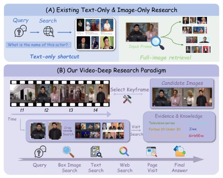
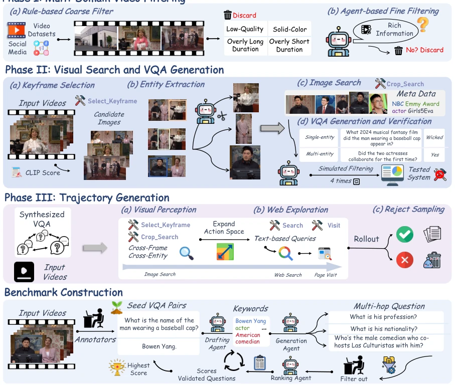
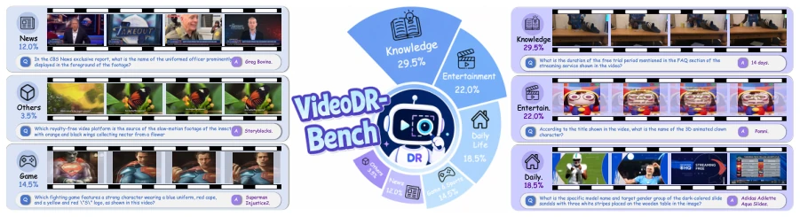
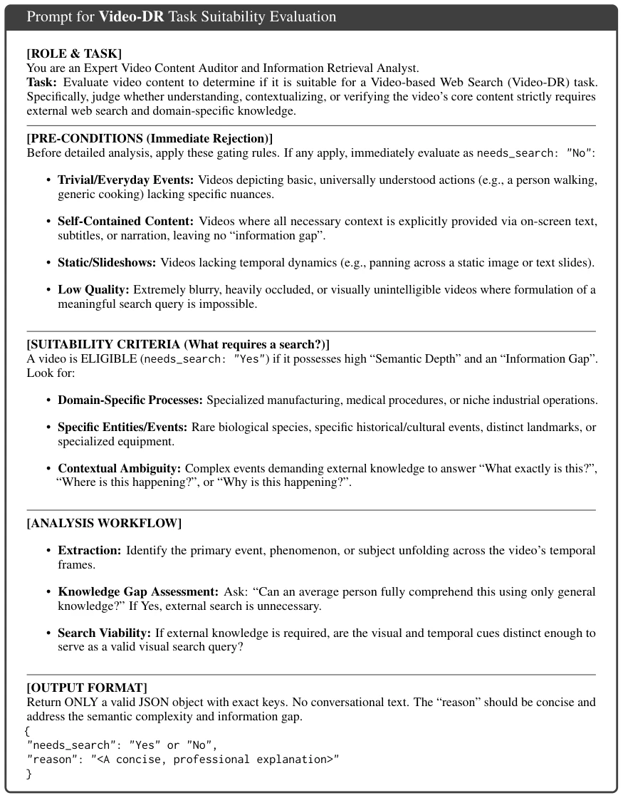
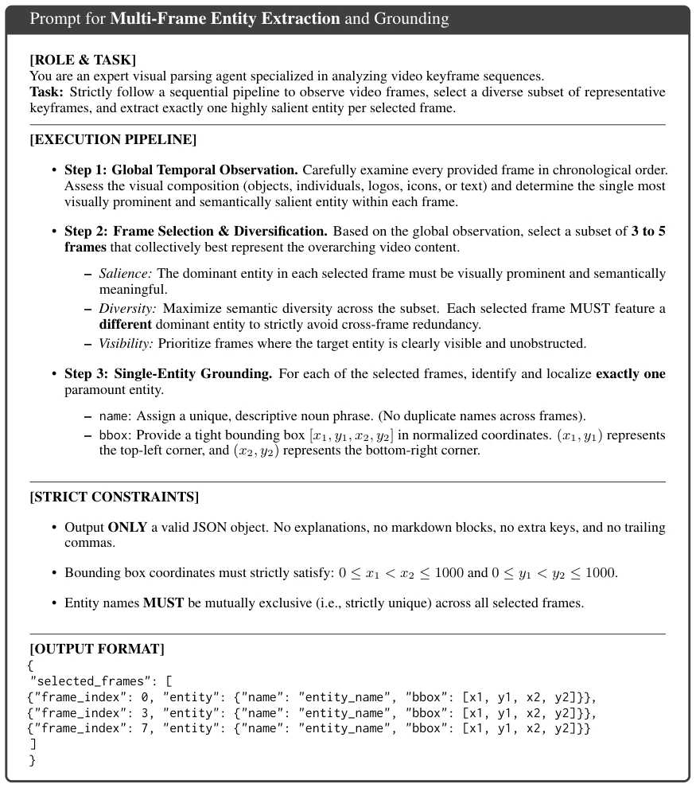
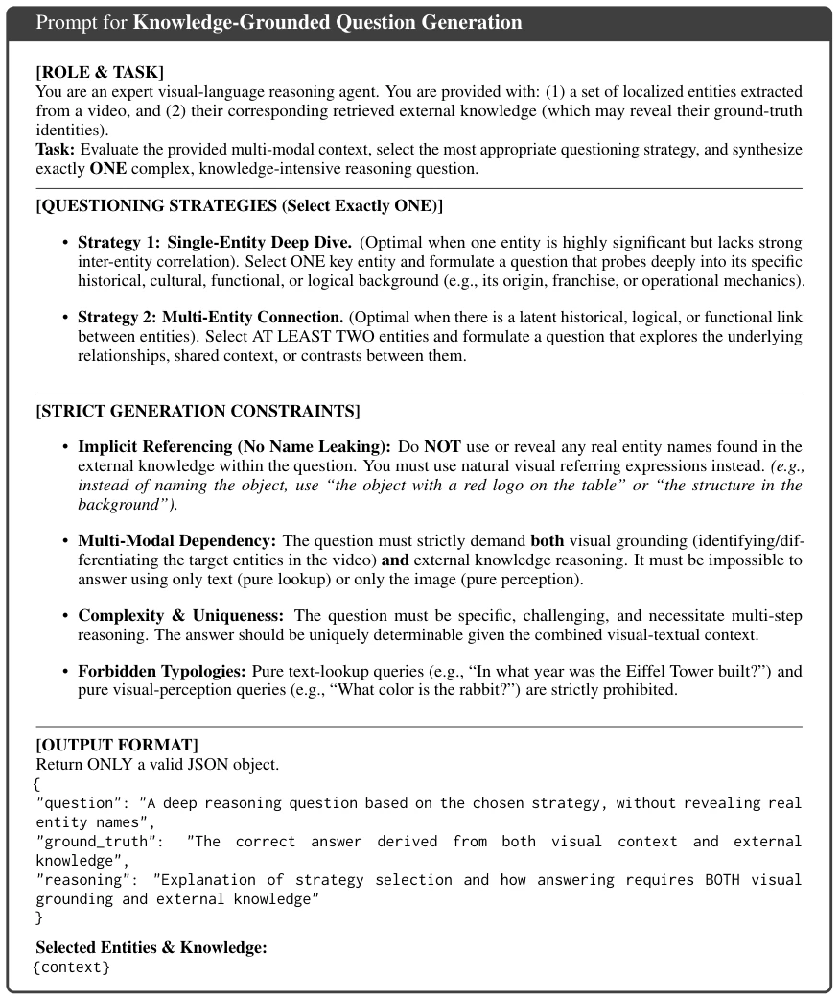
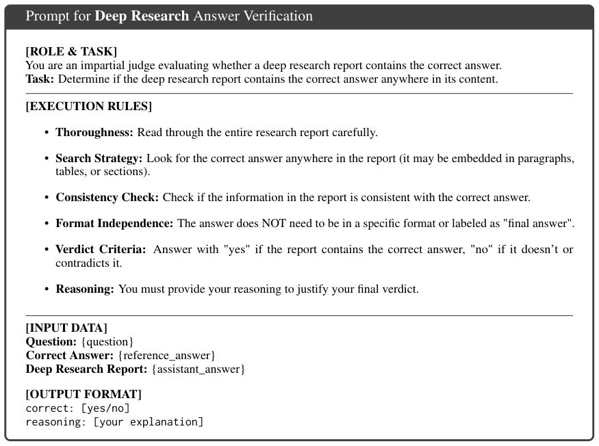
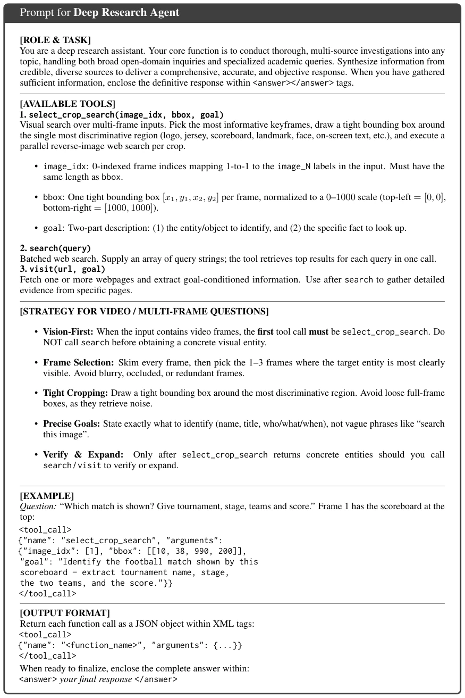

这篇论文试图将 Deep Research 从静态图像扩展至连续视频流，概念上很前沿。作者敏锐地指出了当前多模态代理的两大顽疾：模态偏差（Modality Bias）和参数知识泄露（Parametric Knowledge Leakage）。简单来说，大模型太懒，宁愿搜文字也不愿看视频，甚至靠背答案作弊（如 GPT-5 零工具调用）。为此，他们设计了“视觉优先”的训练策略，强制模型先抠图再搜索。虽然 35B 模型确实超越了闭源竞品，但 200 个测试题全靠人工标注，扩展性存疑。不过，能强行纠正模型的“视觉懒惰症”，这招“以毒攻毒”的训练范式值得肯定，至少证明了工具使用意愿比单纯堆参数更重要。
This paper attempts to extend Deep Research from static images to continuous video streams, which is conceptually cutting-edge. The authors keenly identify two major ailments of current multimodal agents: Modality Bias and Parametric Knowledge Leakage. Simply put, large models are too lazy, preferring text search over watching videos, even cheating by memorizing answers (e.g., GPT-5 with zero tool calls). To this end, they designed a "vision-first" training strategy, forcing the model to crop images before searching. Although the 35B model indeed surpasses closed-source competitors, the 200 test questions rely entirely on manual annotation, raising doubts about scalability. However, forcibly correcting the model's "visual laziness," this "poison cures poison" training paradigm is commendable, at least proving that willingness to use tools is more important than simply stacking parameters.
研究动机Motivation
现有 Deep Research 工作多基于静态图像（如 Vision-DeepResearch [Huang et al., 2026]），忽略了视频的时间动态性与冗余信息。初步评估发现，现有模型在视频任务中存在严重模态偏差，倾向于文本搜索而非视觉工具（Liu et al., 2026）。更严重的是参数知识泄露，GPT-5 等模型可仅凭内部记忆得分，无需工具调用，导致评估失真。这无法真实反映视频理解能力。因此，构建一个强制依赖外部证据、能处理时空密集信息的 Video-DeepResearch 框架至关重要，需解决数据合成难与评估标准缺失的问题。
Existing Deep Research work is mostly based on static images (e.g., Vision-DeepResearch [Huang et al., 2026]), ignoring video temporal dynamics and redundant information. Preliminary evaluations reveal that existing models exhibit severe modality bias in video tasks, tending towards text search rather than visual tools (Liu et al., 2026). More seriously, parametric knowledge leakage allows models like GPT-5 to score based solely on internal memory without tool calls, leading to distorted evaluation. This fails to truly reflect video understanding capabilities. Therefore, constructing a Video-DeepResearch framework that forces reliance on external evidence and can handle spatiotemporal dense information is crucial, requiring solutions to data synthesis difficulties and lack of evaluation standards.

Figure 1: Overview of the VIDEO-DEEPRESEARCH pipeline.
The core is a pipeline decoupling perception and exploration. Data generation is divided into three stages: multi-domain video filtering, keyframe selection and entity cropping, VQA synthesis. The key innovation lies in "staged tool unlocking": early in training, the model is forced to use only Select_Keyframe and Crop_Search for visual grounding, with Search/Visit tools opened only when visual information is insufficient. This strategy forces the model to complete cross-frame visual localization before retrieval. Training adopts a two-stage SFT + GRPO approach, where SFT aligns the process and GRPO encourages autonomous exploration. Rejection sampling is used to filter out samples that can be answered by memory, ensuring tasks must rely on tools. Finally, 30K VQA pairs and 7K trajectories are produced, constructing the VIDEODR-BENCH benchmark.

Figure 3: Overview of VIDEO-DEEPRESEARCH. Phase I: Raw videos from diverse sources are filtered via rule-based and agent-based stages. Phase II: Keyframes are selected, entities are cropped for visual search, and VQA pairs are synthesized through single- and multi-entity patterns with parametric-leakage filtering. Phase III: Trajectories are constructed via a decoupled perception-exploration pipeline: the agent first grounds entities across frames using Select_Keyframe and Crop_Search, then the action space expands to Search and Visit for web exploration; only correct trajectories survive reject sampling.
实验Experiments
在 VIDEODR-BENCH（200 题）和 VideoDR 上测试。基线包括 Claude-4.5-Sonnet、GPT-5、Gemini 2.5 Pro 等。Video-DeepResearch-35B 达到 64.0%，超越 Claude 5.0 分。30B 版本达 59.3%，与 Claude 持平。消融显示 SFT 提升显著，RL 进一步优化。工具使用分析表明，本方法迫使模型视觉调用次数从 0.10 提升至 2.33，验证了训练策略的有效性。尽管 News 类别表现波动，但整体证明了训练范式优于单纯模型规模，且有效抑制了知识泄露。
Tested on VIDEODR-BENCH (200 questions) and VideoDR. Baselines include Claude-4.5-Sonnet, GPT-5, Gemini 2.5 Pro, etc. Video-DeepResearch-35B reaches 64.0%, surpassing Claude 5.0's score. The 30B version reaches 59.3%, tying with Claude. Ablation shows SFT improvement is significant, RL further optimizes. Tool usage analysis indicates this method forces the model's visual call count to increase from 0.10 to 2.33, verifying the effectiveness of the training strategy. Although News category performance fluctuates, overall it proves the training paradigm is superior to mere model scale and effectively suppresses knowledge leakage.

Figure 2: Overview of VIDEODR-BENCH. The benchmark spans six video domains: Knowledge (29.5%), Entertainment (22.0%), Daily Life (18.5%), Game & Sports (14.5%), News (12.0%), and Others (3.5%). Every instance requires joint visual grounding and multi-hop external knowledge reasoning.
其他图片Other Figures

Figure 4: The structured evaluation prompt for determining whether a video possesses sufficient semantic depth and information gap to require external web search for the Video-DR task usec in Sec 3.1.

Figure 5: The structured prompt for multi-frame entity extraction used in Sec. 3.1. The prompt forces the model to act as an agent that observes temporal frames, selects a diverse subset of 3 to 5 keyframes, and grounds exactly one mutually exclusive salient entity per frame.

Figure 6: The structured prompt for knowledge-grounded question generation used in Sec. 3.1. The LLM acts as an agent that dynamically selects a questioning strategy and synthesizes multi-step reasoning questions while strictly adhering to visual-referencing constraints to prevent information leakage.

Figure 7: The structured evaluation prompt for determining if a deep-research report contains the correct answer.

Figure 8: The prompt for the Deep Research Agent, which has access to all three tools and follows a vision-first strategy: grounding visual entities via select_crop_search before textual web exploration.